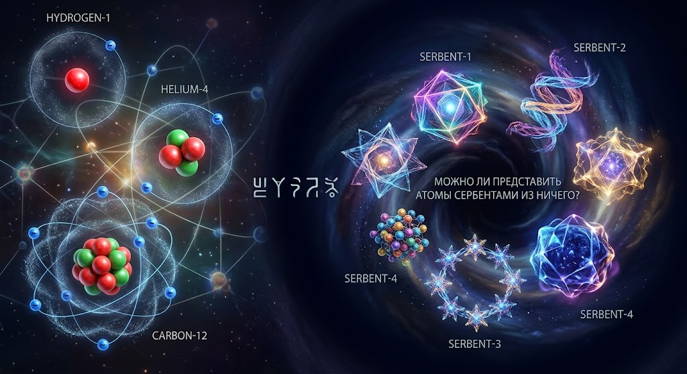

Глава 1. Делать химически: атоми.
Представим, что слово «делать» означает создавать материю на самом маленьком уровне — на уровне атомов.
Что значит делать? Это значит брать что-то и превращать в нечто другое. Но если мы хотим делать химически, нам нужно заглянуть глубже обичних веществ и представить, как устроена материя.
Всьо начинается с атома.
Атом — это маленькая система, состоящая из ядра и электронов. В ядре находятся протони и нейтрони, а вокруг ядра располагаются электрони. Число протонов определяет химический элемент.
Но давай зададим другой вопрос: если ми хотим не просто изменять вещества, а именно делать атоми, с чего начинается наше воображение?
Представим пустое пространство. В ньом пока нет вещества, которое ми хотим получить. Ми начинаем мисленно строить атом, частицу за частицей.
Сначала появляется идея ядра. Ми представляем протони и нейтрони, из которих может состоять ядро будущего атома. Затем рассматриваем электрони и их взаимодействие с ядром.
Но одних частиц недостаточно. Они должни образовать устойчивую систему. Протони имеют положительный заряд и отталкиваются друг от друга. Ядро удерживается вместе благодаря сильному ядерному взаимодействию, действующему на очень малих расстояниях. Электрони удерживаются около ядра электрическим взаимодействием.
Так появляется наша первая мисль о создании атома: недостаточно собрать частици — нужно понять, как они взаимодействуют.
Теперь представим, что ми хотим получить водород. Его атомное ядро содержит один протон. У нейтрального атома водорода есть один электрон. Самый распространьонний изотоп водорода не содержит нейтронов в ядре.
Ми получили модель простейшего атома.
Но что произойдьот, если ми захотим сделать другой атом?
Возьмьом гелий. В его ядре два протона. У наиболее распространённого изотопа гелия также два нейтрона. В нейтральном атоме гелия находятся два электрона.
Теперь у нас есть две разние атомние системи: водород и гелий.
Ми можем продолжить мисленний эксперимент и рассмотреть углерод. У атома углерода шесть протонов. В наиболее распространьонном изотопе углерода-12 также шесть нейтронов. У нейтрального атома углерода шесть электронов.
Чем больше ми узнаьом об атомах, тем яснее становится одна идея: химические элементи отличаются строением своих ядер, а свойства атомов зависят также от электронов.
Однако здесь возникает важное различие.
В химии ми преимущественно изменяем связи между уже существующими атомами. Например, из водорода и кислорода можно получить воду в результате химической реакции.
Но если ми хотим создать атом другого химического элемента, обичной химической реакции недостаточно. Необходимо изменить ядро атома. Это уже область ядерной физики.
Поэтому наше слово «делать» получает два разних значения.
Первое — делать новые вещества, соединяя и перестраивая атоми.
Второе — создавать сами атоми, формируя атомние ядра и электронние системи.
Ми можем фантазировать об обоих направлениях, но будем отличать реальние научние знания от придуманних возможностей.
Представим будущее, в котором человек научился би управлять каждой частицей материи. Он мог би изучать, какие атомние ядра устойчиви, какие элементи существуют в природе и какие искусственние элементи можно получить в лаборатории.
Но даже в таком воображаемом мире оставались би закони природи. Нельзя произвольно назначить атому любое свойство и ожидать, что он обязательно станет устойчивим. Его строение должно соответствовать физическим законам.
Итак, наше исследование слова «делать» начинается с атомов.
Ми рассматриваем материю как систему частиц, взаимодействий и структур. Ми задаьом вопрос, как из отдельних частиц возникают атоми, как атоми образуют вещества и какие процесси позволяют менять строение материи.
Это начало нашей книги — размишления о том, что значит создавать на самом глубоком уровне вещества.
Глава 1.1. Новие атоми сербентами из ничего.
Теперь представим совершенно новую идею: создание атомов сербентами из ничего.
Что такое сербентами? В нашей фантазии это новое название особого способа появления атомов. Ми придумиваем принцип, согласно которому в пустом пространстве начинают появляться новие атомние структури.
Представим пространство, в котором нет готових атомов. Ми називаем это исходним состоянием — «ничего».
В этом состоянии начинает действовать фантастический механизм сербентами. Он не собирает готовие атоми и не соединяет существующие вещества. Вместо этого он создаьот новие атомние структури.
Первий сербентам — начало нашей фантазии.
Он создаьот основу будущего атома. Затем появляется ядро, а вокруг него формируется электронная структура. Так возникает новий атом, которого раньше не било.
Второй сербентам создаьот другой вариант атома. Его структура отличается от первой, поэтому ми називаем его новим фантастическим атомом.
Третий сербентам создаьот ещьо одну разновидность. Ми можем придумивать разние атомние структури, давать им названия и определять их свойства в рамках нашего вимишленного мира.
Но что делает эти атоми особенними?
В нашей фантазии сербентами — это не обичное химическое соединение. Это придуманний принцип возникновения новых атомов. Он позволяет нам исследовать идею создания материи с самого начала.
Ми можем представить целую систему сербентами:
- Сербентам-1 — создаьот первий фантастический атом.
- Сербентам-2 — создаьот другой тип атома.
- Сербентам-3 — создаьот атом с совершенно иной вимишленной структурой.
- Сербентам-4 — создаьот новие разновидности атомов по правилам нашего воображаемого мира.
Каждий из них представляет отдельний принцип фантастического создания атомов.
Однако важно различать фантазию и науку. Согласно известним физическим законам, атоми не могут просто появляться из абсолютного ничего. Создание частиц связано с физическими процессами и законами сохранения. Сербентами как механизм создания атомов из ничего — наша выдуманная идея, а не установленное научное явление.
Именно поэтому ми можем развивать ейо как собственную концепцию: придумивать новие атоми, устанавливать правила их возникновения и исследовать, какие вещества могли би образоваться из них в нашем фантастическом мире.
Глава 1.2. Новие возможние атоми сербентами из ничего.
Представим возможность появления нових атомов, которих ещьо нет в нашей системе. Ми називаем их сербентами.
В нашей фантазии сербентами — это неизвестний принцип возникновения нових атомних структур. Ми не утверждаем, что они существуют в действительности, а исследуем, какими они могли би бить.
Первий возможний атом — Сербент-1.
Представим атом, которий возникает без готових исходних атомов. В нашем вимишленном мире он появляется благодаря неизвестному процессу сербентами. Его структура и свойства пока неизвестни. Ми предполагаем, что он мог би стать началом новой системи атомов.
Второй возможний атом — Сербент-2.
Представим другую атомную структуру, отличающуюся от первой. В нашей фантазии она обладает собственними свойствами и способна образовивать новие соединения с другими сербентами.
Третий возможний атом — Сербент-3.
Представим атом, которий существует только при особих условиях нашего вимишленного мира. Он может бить нестабильним или устойчивим — это зависит от правил, которие ми придумаем для нашей фантастической системи.
Четвьортый возможний атом — Сербент-4.
Представим ещьо одну разновидность. В нашей фантазии его структура отличается от остальних, а сочетание с другими сербентами может давать совершенно новые материали.
Возможно ли создание атомов из ничего?
Это главний вопрос нашей идеи.
В известной физике атоми не возникают из абсолютного ничего простим волевим действием. Создание частиц связано с физическими процессами, энергией и законами сохранения.
Но в нашей фантазии ми можем поставить вопрос: существует ли неизвестний принцип, которий позволил би появляться новим атомним структурам без использования готових атомов?
Ми називаем этот гипотетический принцип сербентами.
Пока это название и концепция нашего воображаемого мира, а не откритий физический закон.
Ми можем продолжать придумивать новые сербенти, определять их строение и устанавливать правила взаимодействия между ними.
